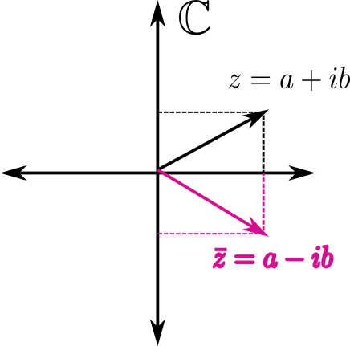

1.2. Complex numbers#
For many centuries it was thought that the real numbers were enough. That was where it all ended. Equations such as
simply had no solution. Until, for various reasons, it became important to have a framework in which to solve them. Complex numbers appear, \(\mathbb{C}\).
Note: If you are curious, you can read something about the history of complex numbers on the website of the Canarian mathematician Rodrigo Trujillo.
Returning to our introduction to \(\mathbb{C}\), it is necessary to continue the chain of inclusions, that is, since we already have
we must impose \(\mathbb{R}\subset\mathbb{C}\). Since, because of the Archimedean property, there is no room for more numbers on the real line, the most natural geometric way to enlarge the number system is to move to the plane. Thus, the first idea of complex numbers should be the geometric idea of the plane, what is known as the complex plane:
Within the complex plane, real numbers are identified with the horizontal axis. Thus the real number \(a\) corresponds to the complex number \((a,0)\).
1.2.1. Cartesian representation#
We are writing complex numbers as pairs of real numbers. This is the Cartesian representation.
Of course, having just a set of numbers is not enough. We need to know how to operate with them. We introduce two operations, addition and multiplication, as follows:
\((a,b)+(c,d):=(a+c,b+d)\),
\((a,b)(c,d):=(ac-bd,ad+bc)\).
As we see, the definition of addition is completely natural. However, the definition of multiplication is not. Later we will understand the usefulness of defining it in this way.
For our extension to be valid, we must check that the operations we have just defined, when applied to real numbers, reduce to the usual operations in \(\mathbb{R}\). Let us see it:
\((a,0)+(c,0)=(a+c,0)\),
\((a,0) (c,0)=(ac-0,0+0)=(ac,0)\).
So far it seems that we are doing well. But now let us recall our starting point. Does the equation \(x^2+1=0\) have a solution in \(\mathbb{C}\)? Or, what is the same thing, is there any complex number, \(x\), such that \(x^2=-1\)? We are going to see that the complex number \((0,1)\) has this property:
As we have just checked, this number is special. We will denote it by a different name. In general it is usually called \(i\) in a mathematical context and \(j\) in a physical context. We will use \(i=(0,1)\). It is easy to determine the remaining powers of \(i\):
\(i^2=-1\),
\(i^3=i^2i=-i\),
\(i^4=i^2i^2=(-1)(-1)=1\),
\(i^5=i^4i=i\), and from here on they repeat. Therefore, to compute \(i^n\) we must divide \(n\) by \(4\), and the remainder will give us the value we seek. Let us see an example:
1.2.2. Binomial form#
From the identification of \(\mathbb{R}\) with the horizontal axis of the complex plane, we have that the complex number \((1,0)\) is the real number \(1\). We can now introduce another way of writing complex numbers, known as binomial form:
A complex number, \(z\), can therefore be written as \(z=a+ib\), where \(a\) is its real part and \(b\) is its imaginary part.
{kind=link}
Using the usual multiplication for binomials, we can better understand the strange definition of multiplication in \(\mathbb{C}\):
where we have used that \(i^2=-1\).
1.2.3. Properties of multiplication#
Let us now try to look more deeply into the multiplication of complex numbers.
Identity element. What we seek is a complex number such that any other number multiplied by it remains unchanged. Since the identity element in \(\mathbb{R}\) is \(1\), it seems reasonable to suppose that in \(\mathbb{C}\) it is \((1,0)\). Let us verify it:
\[ (a,b)(1,0)=(a-0,b+0)=(a,b). \]Inverse element. Now, given a complex number \(z=a+ib\in\mathbb{C}\), we will see that its inverse is
\[ z^{-1}=\left(a+ib\right)^{-1}=\frac{a}{a^2+b^2}-i\frac{b}{a^2+b^2}. \]To do this, we must verify that multiplying these two numbers gives the identity element:
\[ zz^{-1}=(a+ib)\left(\frac{a}{a^2+b^2}-i\frac{b}{a^2+b^2}\right)= \frac{a^2+b^2}{a^2+b^2}+i\frac{ab-ab}{a^2+b^2}=1. \]Division.
\[ \frac{z_1}{z_2}=\frac{a+ib}{c+id}=(a+ib)\left(c+id\right)^{-1}=\left(a+ib\right) \left(\frac{c}{c^2+d^2}-i\frac{d}{c^2+d^2}\right). \]
In a moment we will see a more natural way to define division in \(\mathbb{C}\). Before that, we introduce a notion of special interest.
Definition: Given \(z=a+ib\in\mathbb{C}\) we define its conjugate, \(\bar{z}\), as
{kind=link}

The main advantage of introducing the conjugate of a complex number is that multiplying a number by its conjugate gives a real number,
which allows us to simplify some operations, such as division:
1.2.4. Polar form (or modulus/argument form)#
At the same time, the product of a complex number and its conjugate also serves to introduce an important way of representing complex numbers: the polar form, or modulus/argument form.
{kind=link}
This way of representing a complex number is based on the fact that a point in the plane is perfectly determined if we know its components along the axes \(OX\) and \(OY\) (Cartesian representation, \(z=(a,b)\)), but also if we know the length of the vector joining that point to the origin (modulus, \(M\)) and the angle that this vector makes with the axis \(OX\) (argument, \(\theta\)), as shown in the figure above. This is the polar representation and is usually written as \(z=M_{\theta}\). The way to pass from the Cartesian representation to the polar one, and vice versa, is shown in the following table:
From Cartesian to polar |
From polar to Cartesian |
|---|---|
\(\displaystyle M=\sqrt{a^2+b^2}\) |
\(a=M\cos\theta\) |
\(\displaystyle \theta=\text{arctan}\left(\frac{b}{a}\right)\) |
\(b=M\sin\theta\) |
Let us emphasize that passing from polar form to Cartesian form (or, more precisely, to binomial form) yields what is known as the trigonometric form,
Polar form simplifies multiplication and therefore division of complex numbers as follows:
Multiplication:
\[ \left(M_1\right)_{\theta_1}*\left(M_2\right)_{\theta_2}= \left(M_1*M_2\right)_{\theta_1+\theta_2}\]Division:
\[ \frac{\left(M_1\right)_{\theta_1}}{\left(M_2\right)_{\theta_2}} =\left(\frac{M_1}{M_2}\right)_{\theta_1-\theta_2}\]
It is now easy to introduce the integer powers of complex numbers. Observe that
and, following the same reasoning,
Property (De Moivre’s formula):
Proof: It follows from relating integer powers to the trigonometric representation of complex numbers, since, on the one hand,
and, on the other hand,
Equating these two expressions gives De Moivre’s identity.
1.2.5. Roots of integer order#
To conclude the elementary operations with complex numbers, we still need to compute roots of integer order in \(\mathbb{C}\). This is the essential point, what really justifies the introduction of \(\mathbb{C}\). We must not forget that the starting point was to compute the square root of \(-1\)!
Suppose then that, given a natural number \(n\in\mathbb{N}\), we want to compute the \(n\)th roots of a complex number \(M_{\theta}\). That is, we want to find the complex numbers \(z=N_{\varphi}\in\mathbb{C}\) such that
or, equivalently,
Then, on the one hand, we must match the moduli,
that is, \(N\) will be the positive \(n\)th root of the positive real number \(M\) (which always exists). On the other hand, we must identify the arguments. Here we must be careful, because one temptation is to write that
but we must not forget that this is an identification of angles and that if we add an integer number of full turns around the circle to an angle (\(2\pi\), \(4\pi\),…) we obtain the same angle. Therefore we can write
Why do we stop at \(k=n-1\)? Because for \(k=n\) we would obtain \(\frac{\theta+2n\pi}{n}=\frac{\theta}{n}+2\pi=\frac{\theta}{n}\), that is, the same angle as for \(k=0\).
In summary, every complex number \(M_{\theta}\) has \(n\) complex roots,
For example, let us compute the cube roots of \(-8\), which, as a complex number, can be written as \(8_{\pi}\).
Below we show the graphical representation of these cube roots:
{kind=link}
Exercises:
Compute: \(\displaystyle\frac{(3-2i)(2+3i)}{3-4i}\), \(\displaystyle\frac{(1-i)(2+i)}{5+3i}\), \(\displaystyle i^{5787}\).
Express the complex numbers \(z_1=1+i\) and \(z_2=(2,-2)\) in polar form.
Express the complex numbers \(z_3=2_{\frac{\pi}{2}}\) and \(\sqrt{2}_{\frac{3\pi}{4}}\) in binomial form.
Compute: \((1+4i)^3\), \((1+i)^4\), \((2-2i)^5\), \(\displaystyle\sqrt[4]{1}\), \(\displaystyle\sqrt[5]{243\left(\frac{\sqrt{3}}{2}+\frac{1}{2}i\right)}\).
You can continue practicing on the website of the educational innovation group GieMATic, at the University of Cantabria.